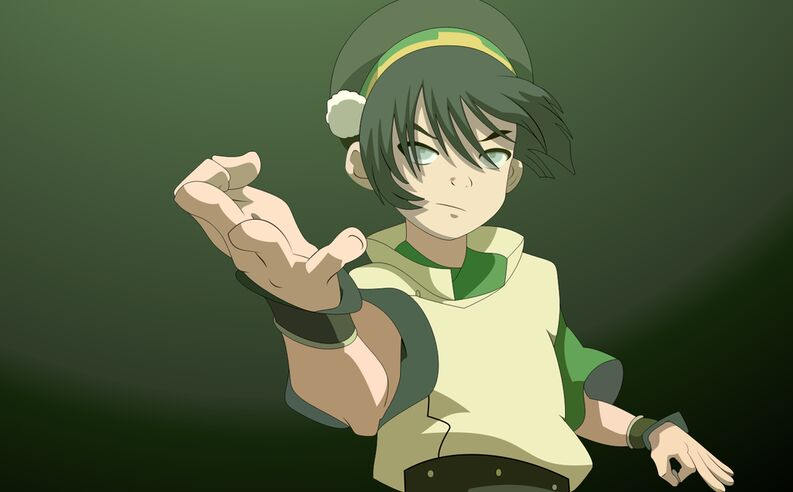
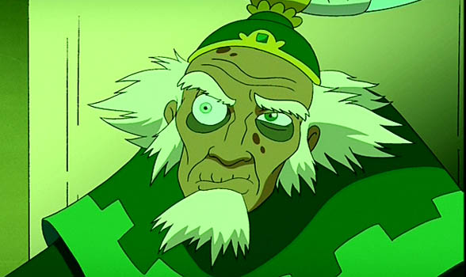
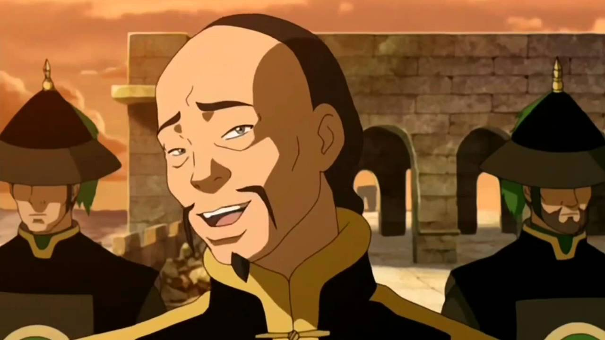
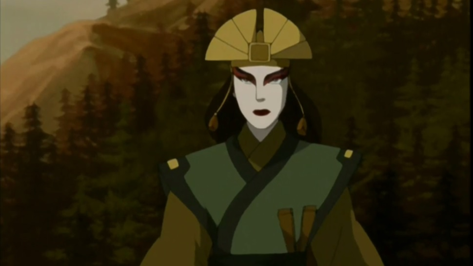

| 1 |

|
Toph |
Toph Beifong es una Maestra de la Tierra Control y una de las más poderosas de su tiempo. Ciega de nacimiento, Toph fue tratada con condescendencia constantemente a causa de su discapacidad y estatura, en especial por sus padres sobreprotectores.
Al descubrir a los tejones topo, animales capaces de hacer Tierra Control que también eran ciegos, aprendió a usar la Tierra Control como una extensión de sus sentidos. Esto le dio la capacidad de "ver" a través de toda pequeña
vibración que ocurriera en el suelo. Después de haber desarrollado su propio estilo único de Tierra Control, Toph adquirió una personalidad endurecida y se hizo famosa por ganar torneos de Tierra Control, bajo el título de "Bandida
Ciega", a espaldas de sus padres. Aunque inicialmente no estaba interesada en ayudar directamente la con la Guerra, finalmente optó por dejar atrás su antigua vida, y viajar con el Avatar Aang y sus amigos como su instructora de
Tierra Control aprovechando que sus padres finalmente se volvieron insoportables para ella. El dominio total de Toph en la Tierra Control, su personalidad única y pensativo pragmatismo le hicieron una adición valiosa para el equipo
|
| 2 |

|
Bumi |
Bumi fue el salvaje, excéntrico, loco y anciano Rey de Omashu. Cuando era niño, Bumi era un amigo cercano de Aang, y fue el único amigo de Aang desde antes de la Guerra de los Cien Años confirmado que todavía estaba con vida. Él se
había convertido en un anciano y excéntrico, con tendencia a cacarear y reírse de chistes sin gracia. A pesar de su edad supercentenaria y su aparente fragilidad, Bumi fue un Maestro de la Tierra Control y estaba bastante en forma
para su vejez, se autodenominó en un momento como "el Maestro Tierra más poderoso que jamás había visto". Su excentricidad deriva de su creencia a mantener la mente "abierta a las posibilidades". Cuando era niño, Bumi decidió utilizar
el sistema de entrega de correo de Omashu como un tobogán, por lo que Aang lo llamó un "genio loco", un apodo que Bumi parecía apreciar. A pesar de que Bumi parecía senil, era en realidad un brillante táctico y paciente, dispuesto
a esperar hasta el momento oportuno para atacar. Bumi actuó de la misma durante una comida tranquila y pacífica como lo hizo cuando su ciudad fue atacada y casi nunca explicó sus acciones, que tendieron a enfurecer a sus subordinados.
|
| 3 |

|
Long Feng |
Long Feng fue el consejero del Rey Tierra, Gran Secretario de Ba Sing Se y líder de los agentes Dai Li. Era una persona cruel y manipuladora, cuyo plan era dejar poco a poco sin poder al Rey Tierra y gobernar en su lugar. Anteriormente,
fue un joven de clase muy baja, por lo que luchó todo lo que pudo para alcanzar el poder en el gobierno y la ciudad. Mientras el Equipo Avatar estaba en Ba Sing Se, Long Feng fue su enemigo, ya que este tenía a Appa capturado.
Una vez que lograron recuperarlo, descubrieron los planes de Long Feng y lo delataron con el Rey, que lo envió sin dudar a la prisión. Sin embargo, los Dai Li tenían lealtad eterna a Long Feng, y no dudaron en traicionar a su país
y unirse a la princesa de la Nación del Fuego, Azula, para que los ayudara en un golpe de estado. A pesar de que el golpe tuvo éxito y Long Feng llegó al poder, este jamás pudo sentarse en el trono, pues Azula lo traicionó y lo
envió a prisión. Al terminar la Guerra, Long Feng permaneció el resto de su vida en una prisión de Ba Sing Se. |
| 4 |

|
Kyoshi |
El Avatar Kyoshi fue un Avatar del Reino Tierra, nacida inmediatamente después del Avatar Kuruk y el Avatar anterior al Avatar Roku. Murió a la edad de 230 años, ganando el título del humano y Avatar más viejo conocidos. Kyoshi era
una mujer muy alta, y poseía los pies más grandes que cualquier Avatar. Sus armas tradicionales eran abanicos de metal dorados que, además de su forma de vestir y su estilo de lucha, fueron adoptados por las Guerreras Kyoshi de
la Isla Kyoshi, su tierra natal.[1] A diferencia de su sucesores, Roku y Aang, Kyoshi determinó que sólo la verdadera justicia podía traer la paz, y no tuvo reparos en acabar a sus enemigos para lograr este objetivo. El empleo
de estos métodos, hicieron de ella un Avatar generalmente eficaz. Sin embargo, Kyoshi fundó el Dai Li, una decisión que lamentó profundamente debido a su poder, control y eventual corrupción. |